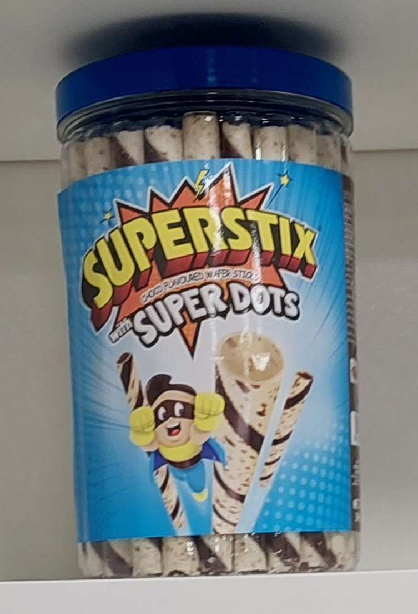
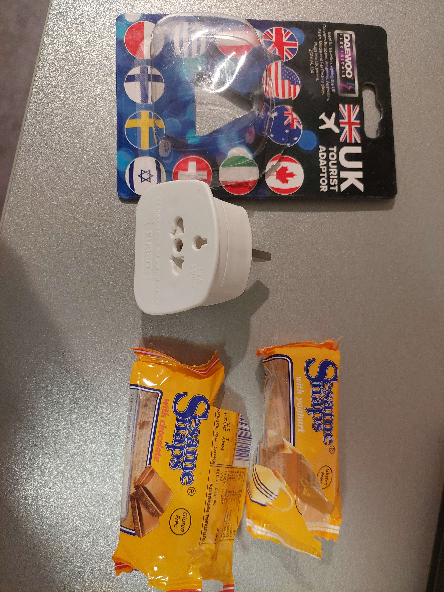

Bonjour vous !
Aujourd'hui c'est le début des visios. Je comptais à la base me lever 1H avant le début des visios histoire de petit déjeuner avant d'y aller mais finalement mon réveil a sonné et j'ai eu la flemme je suis resté couché jusqu'au début des visios que j'ai faites en pyjama pour les premières.
J'avoue que mon téléphone et mon PC ne s'étant pas mis à l'heure, devoir faire le décalage horaire à la main à chaque fois est perturbant mais on s'y fait assez vite. Par peur j'avais quand même mis mon réveil à 9H20 (heure de mon tel donc UTC+1 du coup) pour les visios à 9H30 (heure officielle du rdv donc UTC0) donc j'ai eu théoriquement 1H10 mais j'ai préféré dormir.
En fait, aujourd'hui tous les français étaient crevés et se sont reposés. Le décalage d'une heure pourtant n'aurait pas dû nous impacter outre mesure et nous nous étions couchés assez tôt mais c'était peut-être dû au changement de pays (stress, météo, ... en fait je ne sais pas).
N'ayant pas trouvé de masque de nuit, j'ai dû subir le Soleil dans ce pays ne connaissant pas les volets mais en vrai ça ne m'as pas empêché de dormir juste de me rendormir dans la journée malgré la fatigue.
Aujourd'hui c'était le début des visios "Kickstart your exchange". La plupart de ces réunions étaient chiantes: des copies de la TIM pour nous expliquer comment rédiger des textes formels en anglais et notamment des maîtrises. Celle sur la structure IT était, par contre, très intéressante pour nous renseigner sur les différents outils informatiques à notre disposition. Malheureusement, la seule partie que je n'ai pas écoutée est celle où il parlait des imprimantes et de leur fonctionnement donc l'impression du planning de ménage devra encore attendre...
Il y avais pas mal de pauses entre les conférences. Lors de la dernière pause avant celle du midi (pause qui dura 1H), Célio est venu me trouver pour me proposer d'aller faire des emplettes dans le magasin du campus. Il m'a trouvé en pyjama mais je me suis vite habillé et j'y suis allé avec lui, Louis et Nathan. J'ai acheté un second convertisseur (pas aussi universel que celui que j'ai ramené: ce second ne fait que UK en entrée et quelques pays en sortie) et des bizzareries que j'ai payé en liquide pour avoir plus de £ physiques. Ces bizzareries étaient des "Sesame Snaps" au yaourt et au chocolat: il s'agit de biscuits de sésame avec un peu de yaourt dur / chocolat dessus. C'était bon ça fait un bon grignotage mais il ne faut pas en manger trop d'un coup. D'ailleurs, les portions étaient particulièrement petites. La seconde curiosité c'était des "Superstix" au chocolat. Officiellement c'est de la gauffre mais dans les faits c'est une espèce de cigarette russe chocolatée qui s'allie très bien avec le lait. Le pot en contenait pas mal (genre 25) contrairement au sesame snaps (2) donc ça devrait me tenir encore quelque temps. J'ai aussi profité de cette pause pour manger mon petit déjeuner: Du lait que j'ai bu directement au gallon et des superstixs.
Le soir, j'ai mangé deux pots: Un mac and cheese "original Kabuto" et des nouilles instantanées "Pot Noodles fusions katsu curry". Le mac and cheese devait se préparer de base en deux cycles avec un micro ondes et une quantité précisé d'eau. J'ai essayé de les faire à l'eau frémissante mais j'en ai mis beaucoup trop que j'ai donc dû vider avant de mettre le sachet et elle était pas assez chaude bref je les ai mangées al dente. Les nouilles instantanées étaient quant à elles... suspicieuses... Le sachet qu'elle contenait était théoriquement de la sauce à la mangue mais qui n'en avait pas le goût, qui se présentait sous la forme d'un liquide transparent semi-gluant dans un sachet clairement semblable à ceux des capotes et avec écris à l'arrière "squeeze a little extra" ce qui signifie en gros "sortez-en un petit peu plus" ou "pressez un petit bonus". Ca a rendu le bouillon plus visqueux. En vrai c'était marrant et pas mauvais donc je valide.
À un moment, j'ai vu le détergent au milieu de la vaisselle des Malaysiens. J'ai donc essayé d'aller toquer chez eux pour les prévenir mais pas de réponse. J'ai donc mis un post-it dessus que j'ai fait rédiger par Cyril qui possède une cursive plus lisible que la mienne. J'ai aussi demandé à Célio, Nathan et Jules de leur dire si ils les croisaient. Au final j'en ai parlé à l'un d'eux moi-même le lendemain soir et il m'a dit qu'ils savaient et qu'ils ne l'ont pas fait au détergent (en montrant mon post it).
Sur une note à part, j'ai demandé a 22H13 UTC+1 à mes amis qui ont plus l'habitude que moi de cuisiner des recettes "de plats qui se font en 10 minutes, avec seulement un four et des plaques de cuisson, moyennement copieux et équilibré". J'ai reçu comme suggestion "du steak" car, d'après l'un d'entre eux, "y'a deux choses à équilibrer: La viande et la VIANDE" et une espèce d'entre deux entre le croque monsieur et la pizza.
Le soir, je suis allé me balader de nuit avec Cyril dans le campus et on a discuté un peu. Au départ, il voulait que nous fassions avec notre temps libre un jeu vidéo mais en écoutant bien ce qu'il disait, je lui ai suggéré d'en faire un mod Minecraft plutôt et c'est donc sur ça que nous partons.
Sur une note à part:
A mon arrivée, il faisait trop chaud dans ma chambre donc j'avais coupé le chauffage. Je l'ai remis dès que la température a commencée à baisser mais je sais pas il ne doit pas être très puissant... Ceci dit, en le laissant tourner au maximum en permanence il a réussi au bout de quelque temps à stabiliser la température. J'ai un peu l'impression que l'aération refroidit le tout mais bon elle ne tourne pas en permanence elle donc ça va.
L'Écosse étant au nord de la France, nous nous attendions à ce qu'il y fasse froid mais en vrai rien qui ne soit pas gérable. Un pull et un bon manteau suffisent après il faut juste faire attention à ses doigts et ses oreilles mais pour vous dire je suis même sorti en t-shirt de nuit le premier jour et en y restant pas plus de 10 minutes ça va.
L'isolation sonore vers l'extérieur est impeccable: ma chambre donne sur un couloir assez passant mais malgré ça pas un bruit de ce côté par contre j'entends tout ce qui se passe dans le couloir interne. Je n'entends heureusement pas ce qui se passe chez les autres mais bon...
Les courses de ce jour:
 